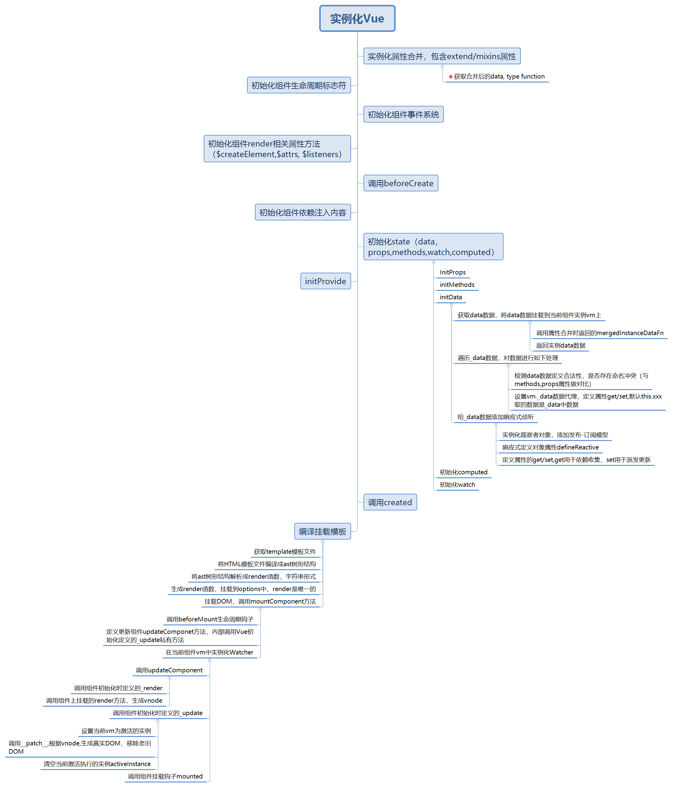
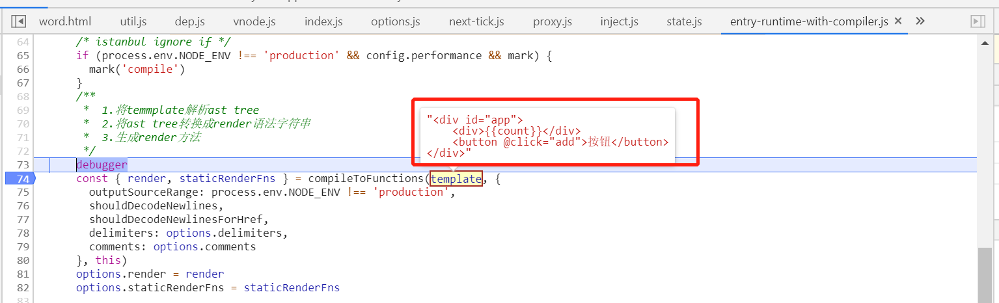
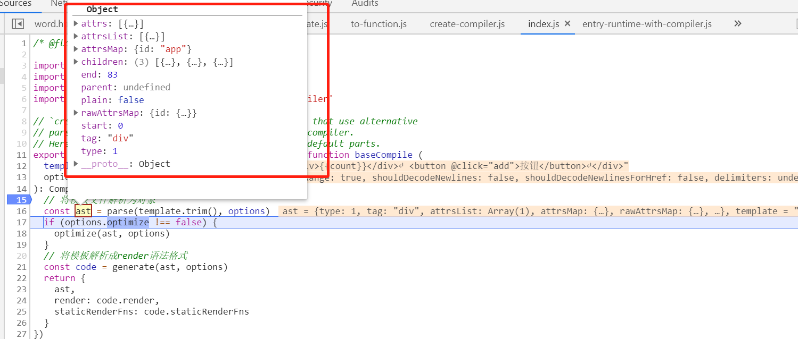
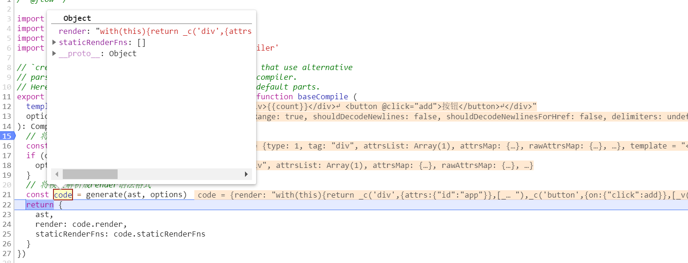
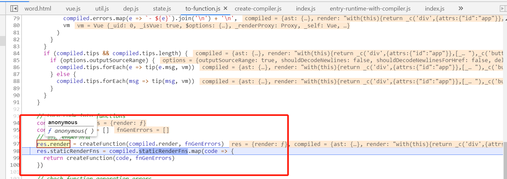
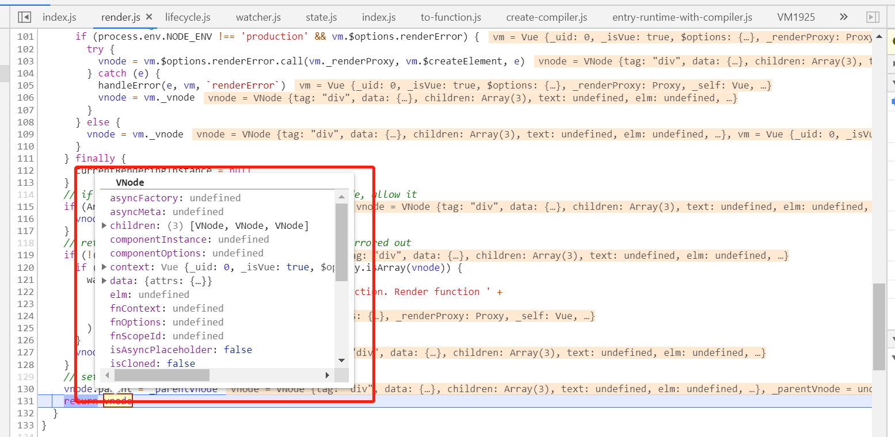

我们在用vue进行开发项目时，是否存在疑惑，new Vue(xxx)的过程中，究竟发生了什么？定义的数据，是如何绑定到视图上的？本篇主要介绍在实例化vue时，主要做了哪些事，文章比较长，主要篇幅内容为数据初始化和数据视图绑定过程。主要代码执行时序图如下所示：

在vue源码中，vue构造函数的定义是在/src/core/instance下，入口文件index.js中，定义了Vue的构造方法，具体代码如下所示：
function Vue (options) {
if (process.env.NODE_ENV !== 'production' &&
!(this instanceof Vue)
) {
warn('Vue is a constructor and should be called with the `new` keyword')
}
this._init(options)
}Vue的构造方法接收一个参数options,options即我们实例化时定义的包含el,data,components等属性的对象，实例化时实际只执行vue初始化时已经在构造方法原型上定义的_init方法，_init实际代码如下所示：
Vue.prototype._init = function (options?: Object) {
const vm: Component = this
// a uid
vm._uid = uid++
let startTag, endTag
/* istanbul ignore if */
if (process.env.NODE_ENV !== 'production' && config.performance && mark) {
startTag = `vue-perf-start:${vm._uid}`
endTag = `vue-perf-end:${vm._uid}`
mark(startTag)
}
// a flag to avoid this being observed
vm._isVue = true
// merge options
// 合并属性，判断初始化的是否是组件
if (options && options._isComponent) {
// optimize internal component instantiation
// since dynamic options merging is pretty slow, and none of the
// internal component options needs special treatment.
initInternalComponent(vm, options)
} else { // 合并vue属性
vm.$options = mergeOptions(
resolveConstructorOptions(vm.constructor),
options || {},
vm
)
}
/* istanbul ignore else */
if (process.env.NODE_ENV !== 'production') {
// 初始化proxy拦截器
initProxy(vm)
} else {
vm._renderProxy = vm
}
// expose real self
vm._self = vm
// 初始化组件生命周期标志位
initLifecycle(vm)
// 初始化组件事件侦听
initEvents(vm)
// 初始化渲染方法
initRender(vm)
callHook(vm, 'beforeCreate')
// 初始化依赖注入内容，在初始化data、props之前
initInjections(vm) // resolve injections before data/props
// 初始化props/data/method/watch/methods
initState(vm)
initProvide(vm) // resolve provide after data/props
callHook(vm, 'created')
/* istanbul ignore if */
if (process.env.NODE_ENV !== 'production' && config.performance && mark) {
vm._name = formatComponentName(vm, false)
mark(endTag)
measure(`vue ${vm._name} init`, startTag, endTag)
}
// 挂载元素
if (vm.$options.el) {
vm.$mount(vm.$options.el)
}
}从上述代码中，我们可以清晰的看到在vue的生命周期每个阶段具体做了什么事，比如：
用过vue的都知道，vue是数据驱动的一个框架，实现双向数据绑定是利用数据劫持，即Object.defineProperty的get和set，在get中进行依赖收集，set中进行派发更新。但是数据是如何初始化的呢？以data为例，我们来看下vue是如何进行数据初始化的。
如上述代码，在beforeCreate后，会走进initState方法，initState中，会分别对props,methods,data和watch进行初始化，如下所示：
export function initState (vm: Component) {
// 初始化组件的watcher列表
vm._watchers = []
const opts = vm.$options
if (opts.props) initProps(vm, opts.props)
if (opts.methods) initMethods(vm, opts.methods)
if (opts.data) {
// 初始化data
initData(vm)
} else {
observe(vm._data = {}, true /* asRootData */)
}
if (opts.computed) initComputed(vm, opts.computed)
if (opts.watch && opts.watch !== nativeWatch) {
initWatch(vm, opts.watch)
}
}我们暂且值看initData，data在mergeOptions时，返回的是一个function，获取data数据，需要执行mergeOptions返回数据中的data方法，initData代码如下所示：
function initData (vm: Component) {
let data = vm.$options.data
// 获取到组件上的data
data = vm._data = typeof data === 'function'
? getData(data, vm)
: data || {}
if (!isPlainObject(data)) {
data = {}
process.env.NODE_ENV !== 'production' && warn(
'data functions should return an object:\n' +
'https://vuejs.org/v2/guide/components.html#data-Must-Be-a-Function',
vm
)
}
// proxy data on instance
const keys = Object.keys(data)
const props = vm.$options.props
const methods = vm.$options.methods
let i = keys.length
while (i--) {
const key = keys[i]
if (process.env.NODE_ENV !== 'production') {
// 属性名不能与方法名重复
if (methods && hasOwn(methods, key)) {
warn(
`Method "${key}" has already been defined as a data property.`,
vm
)
}
}
// 属性名不能与state名称重复
if (props && hasOwn(props, key)) {
process.env.NODE_ENV !== 'production' && warn(
`The data property "${key}" is already declared as a prop. ` +
`Use prop default value instead.`,
vm
)
} else if (!isReserved(key)) { // 验证key值的合法性
// 将_data中的数据挂载到组件vm上,这样就可以通过this.xxx访问到组件上的数据
proxy(vm, `_data`, key)
}
}
// observe data
// 响应式监听data是数据的变化
observe(data, true /* asRootData */)
}getData代码如下所示：
export function getData (data: Function, vm: Component): any {
// #7573 disable dep collection when invoking data getters
pushTarget()
try {
// 调用在属性合并时，返回的data
return data.call(vm, vm)
} catch (e) {
handleError(e, vm, `data()`)
return {}
} finally {
popTarget()
}
}这里面有pushTarget/popTarget,这里主要是用于保证无论何时，执行的组件监听计算只有一个，这个具体后面再讨论。getData的返回值就是合并后的data对象，赋值到当前的实例属性。接下来有个while循环，里面主要做三件事，
第一，判断我们声明的data变量的合法性，我们声明变量的名称一定不要与methods或者props中的属性名重复，这也是许多新手容易犯的错误
第二，声明变量的时候，不要用以_或者$开头的变量，这些可能会导致声明变量和vue私有变量冲突
第三，将data中的变量代理到vm（组件实例）上，按照this的指向性原理，data对象中的this应该指向data，而不应该指向vm，这里做了一层封装代理，具体代码如下：
// 属性代理，从一个原对象中拿数据
export function proxy (target: Object, sourceKey: string, key: string) {
// 设置对象属性的get/set,将data中的数据代理到组件对象vm上
sharedPropertyDefinition.get = function proxyGetter () {
return this[sourceKey][key]
}
sharedPropertyDefinition.set = function proxySetter (val) {
this[sourceKey][key] = val
}
Object.defineProperty(target, key, sharedPropertyDefinition)
}接下来下一步所需要执行的内容就比较重要了，需要对data对象添加响应式侦听，调用observe方法，observe方法代码如下所示：
export function observe (value: any, asRootData: ?boolean): Observer | void {
if (!isObject(value) || value instanceof VNode) {
return
}
let ob: Observer | void
// 存在__ob__属性的一般为观察者对象的实例
if (hasOwn(value, '__ob__') && value.__ob__ instanceof Observer) {
ob = value.__ob__
} else if ( // Object.isExtensible 判断对象是否是可扩展的(可以添加新属性)
shouldObserve &&
!isServerRendering() &&
(Array.isArray(value) || isPlainObject(value)) &&
Object.isExtensible(value) &&
!value._isVue
) { // 必须为数组 || 对象，才能实例化观察者对象
ob = new Observer(value)
}
if (asRootData && ob) {
ob.vmCount++
}
return ob
}每一个响应式对象，都会有__ob__属性，这个是vue中在声明响应式属性时定义的，如果没有该属性，数据的变化就不会被监测到，其他的可以暂时忽略，初始化响应对象是实例化了Observe类，Observer类的具体实现如下所示：
export class Observer {
value: any;
dep: Dep;
vmCount: number; // number of vms that have this object as root $data
constructor (value: any) {
this.value = value
// 实例化一个发布-订阅模型
this.dep = new Dep()
this.vmCount = 0
// 给监听对象定义一个__ob__属性，属性值为this,指向当前实例
// 存在该属性的对象，就是响应式对象
def(value, '__ob__', this)
// 数组类型
if (Array.isArray(value)) {
// 存在原型 __proto__,重写数组原型上的方法
if (hasProto) {
protoAugment(value, arrayMethods)
} else {
// 不存在原型，则在数组中复制重写后的数组方法
copyAugment(value, arrayMethods, arrayKeys)
}
// 响应式监听数组的变化
this.observeArray(value)
} else {
// 如果值的类型为Object,则响应式的声明对象属性
this.walk(value)
}
}在实例化时，有两个分支，一个是数组，一个是对象，在实例化时，都会数据的中定义__ob__属性，值为当前观察者对象。我们先看对象的响应式声明方式，调用this.walk,具体代码如下：
walk (obj: Object) {
const keys = Object.keys(obj)
for (let i = 0; i < keys.length; i++) {
// 响应式定义对象属性的get set
defineReactive(obj, keys[i])
}
}defineReactive是重点，添加对象属性的get/set,get和set中进行数据的劫持，实现代码如下：
export function defineReactive (
obj: Object,
key: string,
val: any,
customSetter?: ?Function,
shallow?: boolean
) {
// 初始化一个发布-订阅模型，每个对象都包含一个dep实例
const dep = new Dep()
// 获取属性描述符
const property = Object.getOwnPropertyDescriptor(obj, key)
// 对象的属性应该是可扩展、可配置的
if (property && property.configurable === false) {
return
}
// cater for pre-defined getter/setters
const getter = property && property.get
const setter = property && property.set
// 处理obj的值
if ((!getter || setter) && arguments.length === 2) {
val = obj[key]
}
// 如果val值存在Object，则需要侦听val值的变化
let childOb = !shallow && observe(val)
Object.defineProperty(obj, key, {
enumerable: true,
configurable: true,
get: function reactiveGetter () {
const value = getter ? getter.call(obj) : val
// 依赖收集 @todo
if (Dep.target) {
dep.depend()
if (childOb) {
childOb.dep.depend()
if (Array.isArray(value)) {
dependArray(value)
}
}
}
return value
},
set: function reactiveSetter (newVal) {
// 派发更新 @todo
// 获取到value数据
const value = getter ? getter.call(obj) : val
/* eslint-disable no-self-compare */
if (newVal === value || (newVal !== newVal && value !== value)) {
return
}
/* eslint-enable no-self-compare */
if (process.env.NODE_ENV !== 'production' && customSetter) {
customSetter()
}
// #7981: for accessor properties without setter
if (getter && !setter) return
if (setter) {
setter.call(obj, newVal)
} else {
val = newVal
}
// 重新更新下数据依赖
childOb = !shallow && observe(newVal)
// 通知数据更新？？？@todo
dep.notify()
}
})
}任何数据的读取，都会走到get方法中，数据的更新，都会走get/set，其中在set中，dep.notify会派发更新页面数据，具体实现技术细节，在后续文章中，会进行详细描述。至此，data初始化工作算是完成了，数据的响应式原理核心利用Dep和Watcher两个类，后面文章专门详细描述vue的响应式原理及Dep和Watcher对象充当的角色和作用，本篇不做详细描述。
数据初始化完成后，接下来需要做的就是解析template和挂载dom,在src\platforms\web\entry-runtime-with-compiler.js中，定义了$mount方法，具体如下所示：
Vue.prototype.$mount = function (
el?: string | Element,
hydrating?: boolean
): Component {
// 获取或查询元素
el = el && query(el)
/* istanbul ignore if */
// vue 不允许直接挂载到body或页面文档上
if (el === document.body || el === document.documentElement) {
process.env.NODE_ENV !== 'production' && warn(
`Do not mount Vue to <html> or <body> - mount to normal elements instead.`
)
return this
}
const options = this.$options
// resolve template/el and convert to render function
if (!options.render) {
let template = options.template
// 存在template模板，解析vue模板文件
if (template) {
if (typeof template === 'string') {
if (template.charAt(0) === '#') {
template = idToTemplate(template)
/* istanbul ignore if */
if (process.env.NODE_ENV !== 'production' && !template) {
warn(
`Template element not found or is empty: ${options.template}`,
this
)
}
}
} else if (template.nodeType) {
template = template.innerHTML
} else {
if (process.env.NODE_ENV !== 'production') {
warn('invalid template option:' + template, this)
}
return this
}
} else if (el) {
// 通过选择器获取元素内容
template = getOuterHTML(el)
}
if (template) {
/* istanbul ignore if */
if (process.env.NODE_ENV !== 'production' && config.performance && mark) {
mark('compile')
}
/**
* 1.将temmplate解析ast tree
* 2.将ast tree转换成render语法字符串
* 3.生成render方法
*/
const { render, staticRenderFns } = compileToFunctions(template, {
outputSourceRange: process.env.NODE_ENV !== 'production',
shouldDecodeNewlines,
shouldDecodeNewlinesForHref,
delimiters: options.delimiters,
comments: options.comments
}, this)
options.render = render
options.staticRenderFns = staticRenderFns
/* istanbul ignore if */
if (process.env.NODE_ENV !== 'production' && config.performance && mark) {
mark('compile end')
measure(`vue ${this._name} compile`, 'compile', 'compile end')
}
}
}
return mount.call(this, el, hydrating)
}从上述方法中，我们能得到以下信息：
1、不要将根元素放到body或者html上
2、在vue中，可以在对象中定义template/render或者直接使用template、el表示元素选择器，用法比较灵活
3、无论哪种写法，最终都会解析成render函数，调用compileToFunctions，会将template解析成render函数
对template的解析步骤大致分为以下几步：
1、将html文档片段解析成ast描述符
2、将ast描述符解析成字符串
3、生成render function
如下图所示：
template:

ast:
function string
生成render函数：

生成render函数，挂载到vm上后，会再次调用mount方法，这个mount方法不是entry-runtime-with-compiler.js复写的这个，是Vue原型上的方法在src\platforms\web\runtime\index.js中，里面会调用mountComponent方法，具体如下：
// public mount method
Vue.prototype.$mount = function (
el?: string | Element,
hydrating?: boolean
): Component {
el = el && inBrowser ? query(el) : undefined
// 渲染组件
return mountComponent(this, el, hydrating)
}src\core\instance\lifecycle.js
export function mountComponent (
vm: Component,
el: ?Element,
hydrating?: boolean
): Component {
vm.$el = el
// 如果没有获取解析的render函数，则会抛出警告
// render是解析模板文件生成的
if (!vm.$options.render) {
vm.$options.render = createEmptyVNode
if (process.env.NODE_ENV !== 'production') {
/* istanbul ignore if */
if ((vm.$options.template && vm.$options.template.charAt(0) !== '#') ||
vm.$options.el || el) {
warn(
'You are using the runtime-only build of Vue where the template ' +
'compiler is not available. Either pre-compile the templates into ' +
'render functions, or use the compiler-included build.',
vm
)
} else {
// 没有获取到vue的模板文件
warn(
'Failed to mount component: template or render function not defined.',
vm
)
}
}
}
// 执行beforeMount钩子
callHook(vm, 'beforeMount')
let updateComponent
/* istanbul ignore if */
if (process.env.NODE_ENV !== 'production' && config.performance && mark) {
updateComponent = () => {
const name = vm._name
const id = vm._uid
const startTag = `vue-perf-start:${id}`
const endTag = `vue-perf-end:${id}`
mark(startTag)
const vnode = vm._render()
mark(endTag)
measure(`vue ${name} render`, startTag, endTag)
mark(startTag)
vm._update(vnode, hydrating)
mark(endTag)
measure(`vue ${name} patch`, startTag, endTag)
}
} else {
updateComponent = () => {
vm._update(vm._render(), hydrating)
}
}
// we set this to vm._watcher inside the watcher's constructor
// since the watcher's initial patch may call $forceUpdate (e.g. inside child
// component's mounted hook), which relies on vm._watcher being already defined
// 监听当前组件状态，当有数据变化时，更新组件
new Watcher(vm, updateComponent, noop, {
before () {
if (vm._isMounted && !vm._isDestroyed) {
// 数据更新引发的组件更新
callHook(vm, 'beforeUpdate')
}
}
}, true /* isRenderWatcher */)
hydrating = false
// manually mounted instance, call mounted on self
// mounted is called for render-created child components in its inserted hook
if (vm.$vnode == null) {
vm._isMounted = true
callHook(vm, 'mounted')
}
return vm
}这个方法中主要流程是：
1、调用了beforeMount钩子函数
2、定义updateComponent方法，是渲染DOM的入口方法
3、对vm添加监听，实例化一个watcher，然后调用updateComponent方法
4、调用mounted声明周期钩子，至此组件实例化结束
Watcher类如下所示：
export default class Watcher {
vm: Component;
expression: string;
cb: Function;
id: number;
deep: boolean;
user: boolean;
lazy: boolean;
sync: boolean;
dirty: boolean;
active: boolean;
deps: Array<Dep>;
newDeps: Array<Dep>;
depIds: SimpleSet;
newDepIds: SimpleSet;
before: ?Function;
getter: Function;
value: any;
constructor (
vm: Component,
expOrFn: string | Function,
cb: Function,
options?: ?Object,
isRenderWatcher?: boolean
) {
this.vm = vm
// 是渲染的watcher @todo
if (isRenderWatcher) {
vm._watcher = this
}
// 将vm添加到组件的_watchers队列中
vm._watchers.push(this)
// options
if (options) {
this.deep = !!options.deep
this.user = !!options.user
this.lazy = !!options.lazy
this.sync = !!options.sync
this.before = options.before
} else {
this.deep = this.user = this.lazy = this.sync = false
}
this.cb = cb
this.id = ++uid // uid for batching
this.active = true
this.dirty = this.lazy // for lazy watchers
this.deps = []
this.newDeps = []
this.depIds = new Set()
this.newDepIds = new Set()
// updateComponents
this.expression = process.env.NODE_ENV !== 'production'
? expOrFn.toString()
: ''
// parse expression for getter
if (typeof expOrFn === 'function') {
this.getter = expOrFn
} else {
this.getter = parsePath(expOrFn)
if (!this.getter) {
this.getter = noop
process.env.NODE_ENV !== 'production' && warn(
`Failed watching path: "${expOrFn}" ` +
'Watcher only accepts simple dot-delimited paths. ' +
'For full control, use a function instead.',
vm
)
}
}
this.value = this.lazy
? undefined
: this.get()
}
/**
* Evaluate the getter, and re-collect dependencies.
* 执行更新组件的方法，先将当前要执行的watcher推入到执行队列中 @todo
*/
get () {
pushTarget(this)
let value
const vm = this.vm
try {
value = this.getter.call(vm, vm)
} catch (e) {
if (this.user) {
handleError(e, vm, `getter for watcher "${this.expression}"`)
} else {
throw e
}
} finally {
// "touch" every property so they are all tracked as
// dependencies for deep watching
if (this.deep) {
traverse(value)
}
popTarget()
this.cleanupDeps()
}
return value
}看起来很长，其实主要就是调用在上述第二步声明的updateComponent方法，updateComponent方法主要执行在vue初始化时声明的_render,_update方法，其中，_render的作用主要是生成vnode,_update主要功能是调用__patch__，将vnode转换为真实DOM,并且更新到页面中，具体如下：
// 定义vue 原型上的render方法
Vue.prototype._render = function (): VNode {
const vm: Component = this
// render函数来自于组件的option
const { render, _parentVnode } = vm.$options
if (_parentVnode) {
vm.$scopedSlots = normalizeScopedSlots(
_parentVnode.data.scopedSlots,
vm.$slots,
vm.$scopedSlots
)
}
// set parent vnode. this allows render functions to have access
// to the data on the placeholder node.
vm.$vnode = _parentVnode
// render self
let vnode
try {
// There's no need to maintain a stack because all render fns are called
// separately from one another. Nested component's render fns are called
// when parent component is patched.
currentRenderingInstance = vm
// 调用render方法，自己的独特的render方法， 传入createElement参数，生成vNode
vnode = render.call(vm._renderProxy, vm.$createElement)
} catch (e) {
handleError(e, vm, `render`)
// return error render result,
// or previous vnode to prevent render error causing blank component
/* istanbul ignore else */
if (process.env.NODE_ENV !== 'production' && vm.$options.renderError) {
try {
vnode = vm.$options.renderError.call(vm._renderProxy, vm.$createElement, e)
} catch (e) {
handleError(e, vm, `renderError`)
vnode = vm._vnode
}
} else {
vnode = vm._vnode
}
} finally {
currentRenderingInstance = null
}
// if the returned array contains only a single node, allow it
if (Array.isArray(vnode) && vnode.length === 1) {
vnode = vnode[0]
}
// return empty vnode in case the render function errored out
if (!(vnode instanceof VNode)) {
if (process.env.NODE_ENV !== 'production' && Array.isArray(vnode)) {
warn(
'Multiple root nodes returned from render function. Render function ' +
'should return a single root node.',
vm
)
}
vnode = createEmptyVNode()
}
// set parent
vnode.parent = _parentVnode
return vnode
}_render返回值： 
_update:
Vue.prototype._update = function (vnode: VNode, hydrating?: boolean) {
const vm: Component = this
const prevEl = vm.$el
const prevVnode = vm._vnode
// 设置当前激活的作用域
const restoreActiveInstance = setActiveInstance(vm)
vm._vnode = vnode
// Vue.prototype.__patch__ is injected in entry points
// based on the rendering backend used.
if (!prevVnode) {
// initial render
// 执行具体的挂载逻辑
vm.$el = vm.__patch__(vm.$el, vnode, hydrating, false /* removeOnly */)
} else {
// updates
vm.$el = vm.__patch__(prevVnode, vnode)
}
restoreActiveInstance()
// update __vue__ reference
if (prevEl) {
prevEl.__vue__ = null
}
if (vm.$el) {
vm.$el.__vue__ = vm
}
// if parent is an HOC, update its $el as well
if (vm.$vnode && vm.$parent && vm.$vnode === vm.$parent._vnode) {
vm.$parent.$el = vm.$el
}
// updated hook is called by the scheduler to ensure that children are
// updated in a parent's updated hook.
}在挂载DOM的过程中，是先添加新数据生成的节点，然后再移除老的节点。